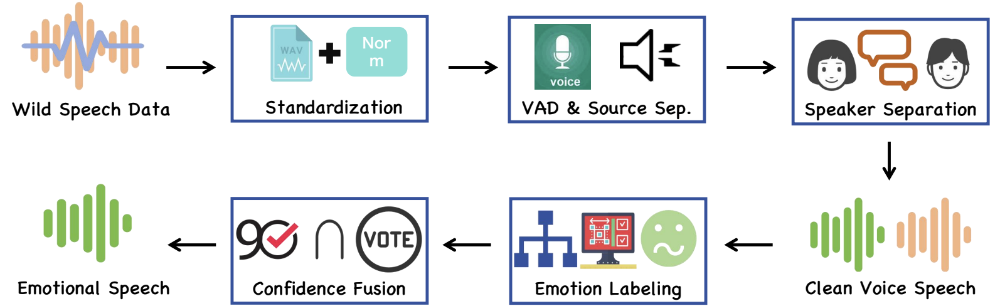
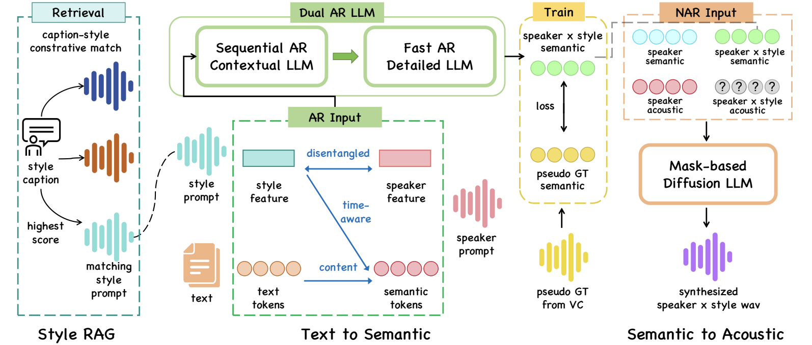

Recent TTS technology continues to advance, but user demand has raised higher standards for system-level practicality. Existing methods face challenges in balancing expressiveness, controllability, and usability. We propose E3-System, a framework that systematically addresses these challenges.
Our system introduces EmoData, the first thousand-hour multilingual and expressive emotional speech dataset built through a fully automated pipeline. We also propose Dual-TTS, a dual-prompt model trained with a novel strategy that disentangles timbre and style, enabling arbitrary "timbre × style" combinations. Supported by a Style-RAG module, our system significantly reduces user effort while achieving state-of-the-art results in naturalness and style consistency.


Samples showcasing the highly expressive, wild emotional speech mined through our automated pipeline.
| Speech | Text | Emotion Label | Speaker |
|---|---|---|---|
| "I simply cannot believe you did that without asking me!" | Angry | Spk_001 |
In this scenario, both timbre and style are conditioned on the same reference speaker prompt.
| Speaker Prompt | Prompt Text | Synthesized Speech |
|---|---|---|
| "The weather today is absolutely beautiful." |
Demonstrating arbitrary "Timbre × Style" combinations. The model independently extracts the identity from the Speaker Prompt and the emotional prosody from the Emotion Prompt without leakage.
| Speaker Prompt (Timbre) | Emotion Prompt (Style) | Prompt Text | Synthesized Speech |
|---|---|---|---|
|
Neutral Voice |
Target Style: Sad |
"I've been waiting here for hours, but nobody came." |